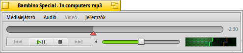
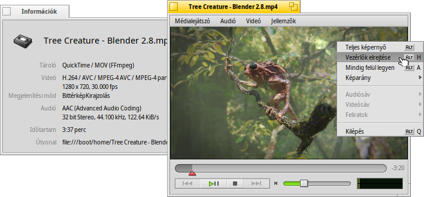
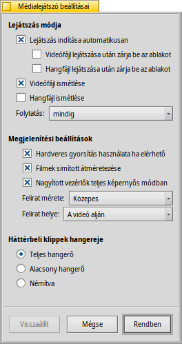

Médialejátszó (MediaPlayer)
Médialejátszó (MediaPlayer)
| Asztalsáv: | ||
| Útvonal: | /boot/system/apps/MediaPlayer | |
| Beállítások: | ~/config/settings/MediaPlayer |
MediaPlayer is the default player for all audio and video files. Thanks to its ffmpeg backend, a plethora of widely used formats are supported. Its simple interface has all the controls you'd expect:
A csúszka a folyamatjelzőn a lejátszási pozíciót jelzi, és azzal módosítható is, az egeret felette tartva pedig megjelenik az aktuális lejátszási idő és a hátralévő idő. A jobb oldalon lévő időre kattintva válthatunk az aktuális idő, a teljes hossz és a hátralévő idő között.
Alatta találhatóak a hagyományos vezérlők (előző, lejátszás/folytatás, megállítás, leállítás, következő). Majd a hangerőszabályzó (a hangszóró ikonra kattintva elnémíthatjuk a lejátszót) és a VU-méter foglal helyet.
Audió és videó lejátszás
Mivel az audió lejátszásnak nincs semmilyen különösebb funkciója, ezért a videó részének a leírását taglaljuk.
Minden média-fájlról hasznos információkat kaphatunk az (ALT I) menüpontból. Ekkor az összes információt megkapjuk a megnyitott fájlról, mint például az időtartamot, a hang és a videó-sáv tulajdonságait.
A leggyakoribb funkciók a videó-terület helyi menüjéből is elérhetőek. Ez igaz a teljes képernyős módra is.
A menü alatt találjuk a méretező opciókat, illetve a méret-arány módosítását. A méretarány általában az eredeti, a arány a legmegfelelőbb beállítás.
A lejátszó használni tudja az SRT formátumú feliratokat. Hogy megjelenjen(ek) a menüben, a fájl nevet úgy kell meghatározni, hogy a név eleje egyezzen a videó nevével, majd a nyelv azonosítója/elnevezése, végül pedig a ".srt" kiterjesztés (nem pedig a videó fájl kitejesztése). Például:
Film.avi Film.Magyar.srt Film.English.srt Film.Français.srt
A több hangsávot tartalmazó videók esetében a különféle hangsávok közül az almenüből választhatunk. A menüben választhatunk több videósáv közül, ha egynél több áll a rendelkezésünkre.
s módba válthatunk (ALT ENTER vagy F vagy dupla-kattintás), a vel (ALT H vagy dupla kattintás jobb gombbal) elrejthetjük a lejátszó keretét és a vezérlőit illetve megadhatjuk, hogy az ablak (ALT A).
Lejátszólista
A (ALT P) megnyit egy ablakot, ahol a jelenleg a listához adott fájlokat látjuk. Duplakattintással a fájlon annak lejátszása elindul.

Új fájlokat is hozzáadhatunk (az ablakba húzással), illetve a meglévőket áthelyezhetjük a listában azok mozgatásával. A menüből en rendezhetjük a listát vagy az sal (DEL) egy bejegyzést törölhetünk a listából, vagy akár a t (ALT T) is választhatjuk a kijelölt fájlnak.
Természetesen, a listát meg is őrizhetjük a menüvel, illetve a sal vagy a fájlon való dupla kattintással újra betölthetjük azt.
Beállítások
Néhány beállítási lehetőséget kapunk a beállítások panelen:
The first batch, , is pretty self-explaining.
Start playback automatically, close windows when finished or play clips in a loop.
From the pop-up menu you choose MediaPlayer's launch behavior. Should it resume playing where it left off last time: , , or .
Next are different .
You can opt to , which cuts down CPU usage but only works for one video window and needs a supporting video card driver.
You can (when not in overlay mode) which uses very fast filtering to smooth over otherwise blocky pixels when zooming video or watching in full-screen mode.
if you prefer slightly bigger controls, maybe because you watch the screen from a bit farther away when in full-screen mode.
Then there are settings for and . They can be shown at the , which will always have them overlayed over the picture. Or , which allows you to resize the window vertically and have the subtitles appear in the black bar at the bottom instead.
Az utolsó beállítási lehetőség pedig a hangerőre vonatkozik, mikoris a lejátszó a háttérben van, tehát az ablak nem aktív. Ez lehet , vagy .
Vezérlés billentyűzettel
A lejátszó a billentyűzettel is vezérelhető.
| Z | Ugrás az előző számra | |
| X | Lejátszás | |
| C | Megállítás | |
| V | Leállítás | |
| B | A következő számra ugrás |
Ezek a gombok a vezérlőelemekhez vannak rendelve. Ezek mindig a billentyűzet alsó sorában, a bal oldalról indulva találhatóak, függetlenül a billentyűzet kiosztásától. A felső billentyűk az amerikai kiosztás alapján értendőek.
| ← / → | Előre / vissza tekerés | |
| SHIFT ← / → | 10 másodpercet ugrik előre / vissza | |
| ALT ← / → | 30 másodpercet ugrik előre / vissza | |
| ↓ / ↑ | Hangerő növelése / csökkentése | |
| ALT ↓ / ↑ | Az előző / következő számra ugrás | |
| Spacebar | Lejátszás/megállítás | |
| ALT ENTER | Teljes képernyős illetve ablak módba váltás (illetve a videón dupla kattintással vagy F / TAB lenyomásakor) | |
| ALT SHIFT 0 / 1 / 2 / 3 | A méretarány módosítása (ahogyan a videót létrehzoták), (a képpontok a képernyő arányaihoz igazodnak), , |